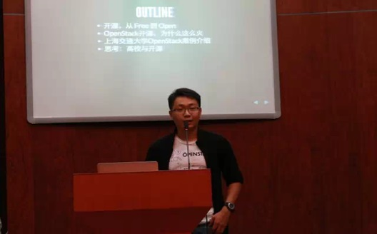
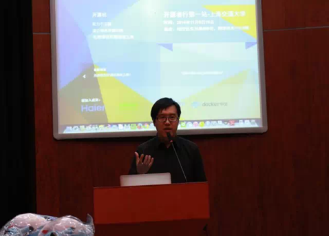
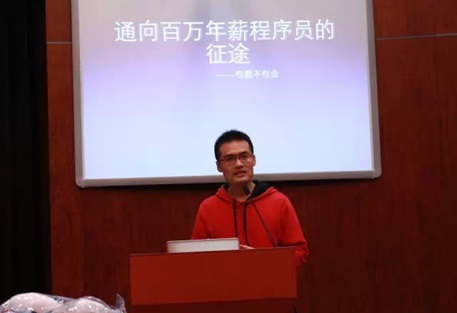
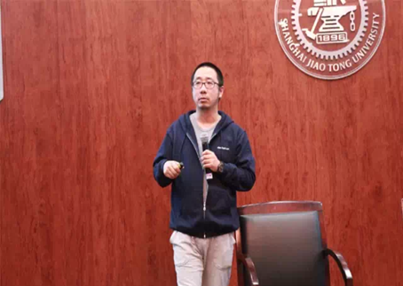
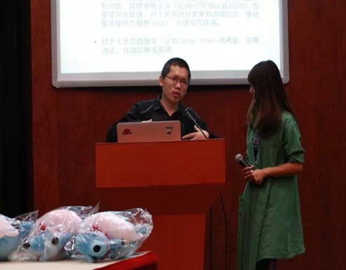
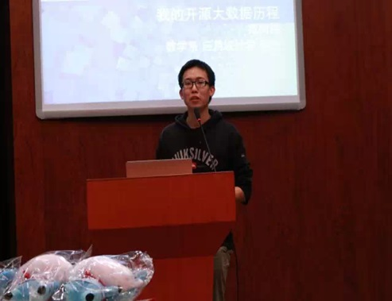

开源者行分享会
About Me
时鹏飞
信息工程专业大四
卓越工程师计划班
一个月前加入新蜂:)
开源者行
旨在将「开源理念」与「开源力量」普及至学生群体。
少年强则国强，少年开源则国开源
一个 phd的开源观
开源盛世
Software is eating the World
Open Source is eating Software world
OpenStack

介绍台湾开源社区
开源社
台湾开源社区现状
台湾学生开源社区

通向百万年薪程序员的征途
— 包教不包会
不要愁学什么语言，都学就是了
不要纠结大公司小公司，都去一遍就是了

Linux Container Engine - docker
简要介绍docker
docker内部构架

重整工具箱:
从开源软件到开放服务
全栈工程师：道神
中文维基百科前管理员
各种工具软件整理介绍

开源的大数据技术生态
交大数据分析师俱乐部的范向伟

Thank you!
本Slides为 R + Slidify 编写，采用了张鹏飞博士的slides模板
张博士slides的Github源码地址:
https://github.com/HolySparky/mydeck
感谢杰艺提供的slides内容！